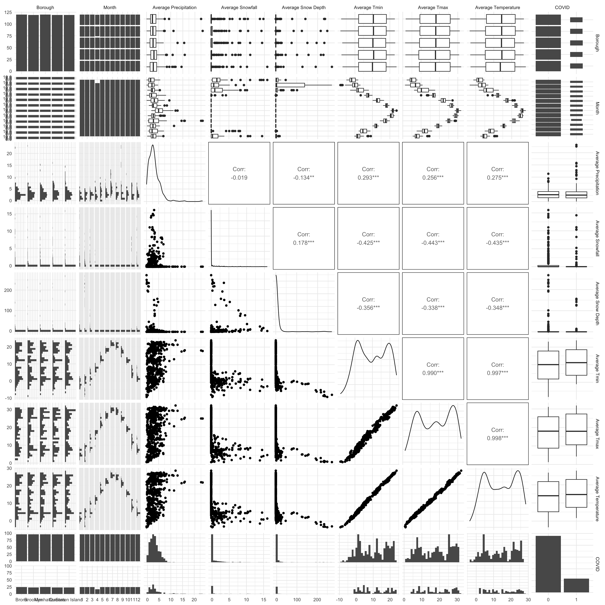
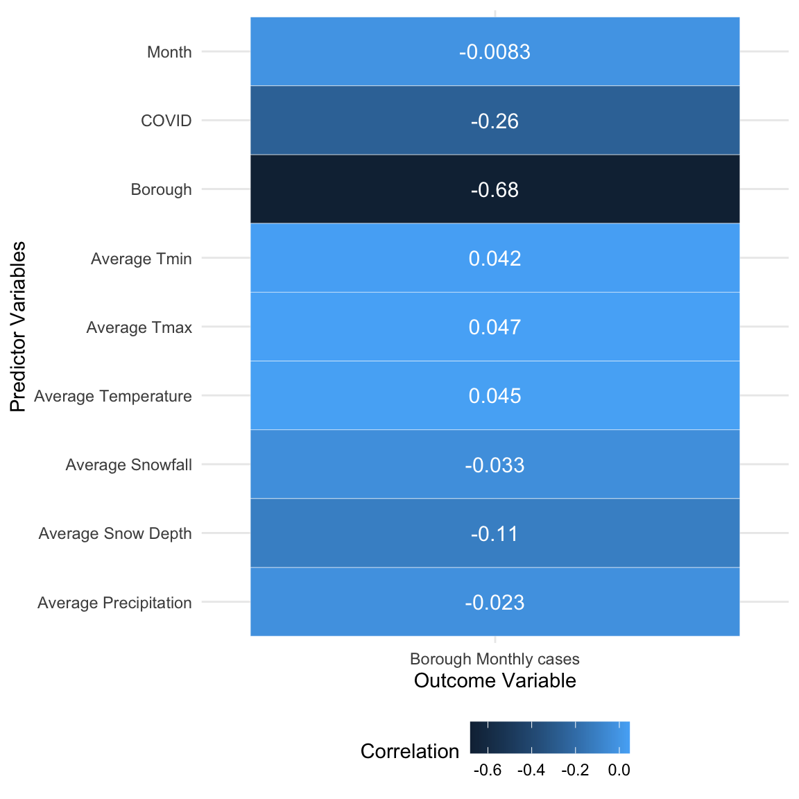
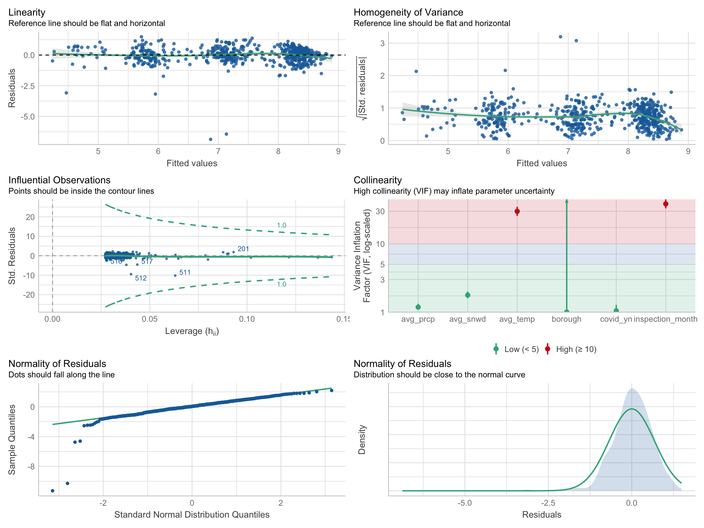

Regression Analysis
REGRESSION ANALYSIS
In this section, we aimed to construct a linear regression model and to generate the monthly number of rats observed using a variety of potential predictors, along with the model diagnostics and model validation. The regression model will be further utilized in the Shiny App for the rat activity prediction. The outcome was defined as the number of rat cases which were inspected in different borough per month.
Exploratory Statistical Analyses
Before constructing the model, we performed the correlational analysis to identify relevant variables and their impacts.
# correlation between key predictors
cases_borough_monthly %>%
dplyr::select(borough, inspection_month_n, avg_prcp, avg_snow, avg_snwd, avg_tmin, avg_tmax, avg_temp, covid_yn) %>%
mutate(inspection_month_n = as.factor(inspection_month_n),
covid_yn = as.factor(covid_yn)) %>%
rename(
"Borough" = borough,
"Month" = inspection_month_n,
"Average Precipitation" = avg_prcp,
"Average Snowfall" = avg_snow,
"Average Snow Depth" = avg_snwd,
"Average Tmin" = avg_tmin,
"Average Tmax" = avg_tmax,
"Average Temperature" = avg_temp,
"COVID" = covid_yn
) %>%
ggpairs() +
scale_fill_discrete()
Through the correlation analysis between key predictors, the result above shown that the daily average temperature, the highest temperature, and the lowest temperature are highly correlated between each other.
# correlation between predictors and outcome
cases_borough_monthly %>%
dplyr::select(boro_code, inspection_month_n, avg_prcp, avg_snow, avg_snwd, avg_tmin, avg_tmax, avg_temp, covid_yn, borough_monthly_cases) %>%
rename(
"Borough" = boro_code,
"Month" = inspection_month_n,
"Average Precipitation" = avg_prcp,
"Average Snowfall" = avg_snow,
"Average Snow Depth" = avg_snwd,
"Average Tmin" = avg_tmin,
"Average Tmax" = avg_tmax,
"Average Temperature" = avg_temp,
"COVID" = covid_yn
) %>%
cor_mat() %>%
cor_gather() %>%
filter(var1 %in% "borough_monthly_cases") %>%
filter(!var2 %in% "borough_monthly_cases") %>%
ggplot(aes(x = var1, y = var2, fill = cor, label = cor)) +
geom_tile(color = "white") +
geom_text(color = "white",size = 4) +
scale_x_discrete(labels = c("Borough Monthly cases")) +
labs(x = "Outcome Variable", y = "Predictor Variables",
fill = "Correlation")
Through the correlation analysis between predictors and outcome, the result above shown that the borough was comparatively related to the outcome.
Model Selection
Full Model
# full model
cases_borough_monthly = cases_borough_monthly %>%
mutate(inspection_month = month.abb[inspection_month_n],
covid_yn = as.factor(covid_yn))
model_linear_full = lm(borough_monthly_cases ~ inspection_month + borough + covid_yn + avg_prcp + avg_snow + avg_snwd + avg_temp, data = cases_borough_monthly)
broom::tidy(model_linear_full) %>%
knitr::kable()| term | estimate | std.error | statistic | p.value |
|---|---|---|---|---|
| (Intercept) | 4877.56152 | 579.615793 | 8.4151633 | 0.0000000 |
| inspection_monthAug | -23.75773 | 641.514627 | -0.0370338 | 0.9704709 |
| inspection_monthDec | -315.92270 | 422.890928 | -0.7470548 | 0.4553353 |
| inspection_monthFeb | 110.61065 | 464.226729 | 0.2382686 | 0.8117575 |
| inspection_monthJan | -704.79392 | 521.621933 | -1.3511585 | 0.1771751 |
| inspection_monthJul | -297.34069 | 680.360646 | -0.4370339 | 0.6622505 |
| inspection_monthJun | -132.07181 | 547.714939 | -0.2411324 | 0.8095383 |
| inspection_monthMar | 213.70290 | 378.803232 | 0.5641528 | 0.5728698 |
| inspection_monthMay | -204.76235 | 407.848043 | -0.5020555 | 0.6158203 |
| inspection_monthNov | -601.71179 | 351.213875 | -1.7132347 | 0.0872075 |
| inspection_monthOct | -528.97590 | 357.576370 | -1.4793368 | 0.1395970 |
| inspection_monthSep | -347.95599 | 516.984759 | -0.6730488 | 0.5011862 |
| boroughBrooklyn | -202.80772 | 205.202472 | -0.9883298 | 0.3234061 |
| boroughManhattan | 234.56147 | 204.704306 | 1.1458551 | 0.2523309 |
| boroughQueens | -3006.29996 | 205.573090 | -14.6239956 | 0.0000000 |
| boroughStaten Island | -3867.04047 | 205.489319 | -18.8186933 | 0.0000000 |
| covid_yn1 | -1666.86661 | 167.384645 | -9.9583006 | 0.0000000 |
| avg_prcp | 38.26454 | 28.695437 | 1.3334712 | 0.1829043 |
| avg_snow | -51.98910 | 35.077476 | -1.4821220 | 0.1388547 |
| avg_snwd | -10.62638 | 2.667413 | -3.9837775 | 0.0000765 |
| avg_temp | -10.29318 | 42.849578 | -0.2402165 | 0.8102479 |
#summary(model_linear_full)The full multiple linear regression model we constructed is
\(borough\_monthly\_cases= \beta_0+ \beta_1(inspectionMonth) + \beta_2(borough) + \beta_3(covid) + \beta_4(avg\_precipitaiton) + \\\beta_5(avg\_snowFall) + \beta_6(avg\_snowDepth) + \beta_7(avg\_temperature)\).
The result shown that the p-value of inspectionMonth,
avg_precipitaiton, avg_snowFall, and
avg_temperature were greater than 0.05, which had to be
analyzed by stepwise regression method.
Stepwise Selection in Full Model
# stepwise with AIC (full model)
model_linear = step(model_linear_full, direction = "both")## Start: AIC=8818.76
## borough_monthly_cases ~ inspection_month + borough + covid_yn +
## avg_prcp + avg_snow + avg_snwd + avg_temp
##
## Df Sum of Sq RSS AIC
## - inspection_month 11 41374644 1489241909 8813.6
## - avg_temp 1 145048 1448012313 8816.8
## - avg_prcp 1 4469650 1452336915 8818.6
## <none> 1447867265 8818.8
## - avg_snow 1 5521717 1453388982 8819.0
## - avg_snwd 1 39892974 1487760239 8833.0
## - covid_yn 1 249273854 1697141119 8911.6
## - borough 4 1745919405 3193786670 9283.1
##
## Step: AIC=8813.58
## borough_monthly_cases ~ borough + covid_yn + avg_prcp + avg_snow +
## avg_snwd + avg_temp
##
## Df Sum of Sq RSS AIC
## - avg_temp 1 645366 1489887275 8811.8
## - avg_prcp 1 3462718 1492704627 8813.0
## <none> 1489241909 8813.6
## - avg_snow 1 6676451 1495918360 8814.3
## + inspection_month 11 41374644 1447867265 8818.8
## - avg_snwd 1 38346768 1527588677 8826.8
## - covid_yn 1 259704790 1748946698 8907.5
## - borough 4 1747059666 3236301575 9269.0
##
## Step: AIC=8811.84
## borough_monthly_cases ~ borough + covid_yn + avg_prcp + avg_snow +
## avg_snwd
##
## Df Sum of Sq RSS AIC
## - avg_prcp 1 2913533 1492800808 8811.0
## <none> 1489887275 8811.8
## - avg_snow 1 6126822 1496014097 8812.3
## + avg_temp 1 645366 1489241909 8813.6
## + inspection_month 11 41874962 1448012313 8816.8
## - avg_snwd 1 38649953 1528537228 8825.1
## - covid_yn 1 259622598 1749509873 8905.7
## - borough 4 1746841348 3236728623 9267.0
##
## Step: AIC=8811.01
## borough_monthly_cases ~ borough + covid_yn + avg_snow + avg_snwd
##
## Df Sum of Sq RSS AIC
## <none> 1492800808 8811.0
## - avg_snow 1 6041412 1498842220 8811.4
## + avg_prcp 1 2913533 1489887275 8811.8
## + avg_temp 1 96181 1492704627 8813.0
## + inspection_month 11 40305045 1452495763 8816.7
## - avg_snwd 1 42278134 1535078942 8825.7
## - covid_yn 1 256710249 1749511057 8903.7
## - borough 4 1744255398 3237056206 9265.1#model_linear = lm(borough_monthly_cases ~ borough + covid_yn + avg_snow + avg_snwd, data = cases_borough_monthly)
broom::tidy(model_linear) %>%
knitr::kable()| term | estimate | std.error | statistic | p.value |
|---|---|---|---|---|
| (Intercept) | 4591.358111 | 152.021884 | 30.2019550 | 0.0000000 |
| boroughBrooklyn | -200.567381 | 206.009043 | -0.9735853 | 0.3306621 |
| boroughManhattan | 234.744781 | 205.536729 | 1.1421062 | 0.2538739 |
| boroughQueens | -2994.362259 | 206.069683 | -14.5308238 | 0.0000000 |
| boroughStaten Island | -3855.169862 | 206.046700 | -18.7101753 | 0.0000000 |
| covid_yn1 | -1652.726053 | 164.218678 | -10.0641783 | 0.0000000 |
| avg_snow | -47.282100 | 30.624628 | -1.5439241 | 0.1231438 |
| avg_snwd | -8.338283 | 2.041559 | -4.0842717 | 0.0000503 |
#summary(model_linear)We eliminated those variables that are not statistically significant using stepwise regression: \(borough\_monthly\_cases= \beta_0+ \beta_1(borough) + \beta_2(covid) + \beta_3(snowFall) + \beta_4(snowDepth)\)
Full Model with Log Transformation
# full model with log transformation
model_linear_full_log = lm(log(borough_monthly_cases) ~ inspection_month + borough + covid_yn + avg_prcp + avg_snow + avg_snwd + avg_temp, data = cases_borough_monthly)
broom::tidy(model_linear_full_log) %>%
knitr::kable()| term | estimate | std.error | statistic | p.value |
|---|---|---|---|---|
| (Intercept) | 7.6477113 | 0.2539622 | 30.1135775 | 0.0000000 |
| inspection_monthAug | -0.3615819 | 0.2810836 | -1.2863857 | 0.1988253 |
| inspection_monthDec | 0.4088321 | 0.1852923 | 2.2064177 | 0.0277486 |
| inspection_monthFeb | 0.7266223 | 0.2034038 | 3.5723141 | 0.0003834 |
| inspection_monthJan | 0.4531600 | 0.2285519 | 1.9827449 | 0.0478705 |
| inspection_monthJul | -0.5593521 | 0.2981042 | -1.8763644 | 0.0611106 |
| inspection_monthJun | -0.3652389 | 0.2399847 | -1.5219258 | 0.1285764 |
| inspection_monthMar | 0.6400278 | 0.1659750 | 3.8561705 | 0.0001282 |
| inspection_monthMay | -0.2591338 | 0.1787011 | -1.4500961 | 0.1475760 |
| inspection_monthNov | 0.1890598 | 0.1538865 | 1.2285663 | 0.2197362 |
| inspection_monthOct | -0.2114703 | 0.1566743 | -1.3497451 | 0.1776280 |
| inspection_monthSep | -0.3436626 | 0.2265201 | -1.5171400 | 0.1297800 |
| boroughBrooklyn | -0.0834743 | 0.0899107 | -0.9284128 | 0.3535823 |
| boroughManhattan | 0.0131220 | 0.0896925 | 0.1462998 | 0.8837359 |
| boroughQueens | -1.2875829 | 0.0900731 | -14.2948631 | 0.0000000 |
| boroughStaten Island | -2.5866328 | 0.0900364 | -28.7287423 | 0.0000000 |
| covid_yn1 | -1.0490882 | 0.0733406 | -14.3043274 | 0.0000000 |
| avg_prcp | 0.0320634 | 0.0125731 | 2.5501635 | 0.0110250 |
| avg_snow | -0.0204332 | 0.0153694 | -1.3294727 | 0.1842184 |
| avg_snwd | -0.0050600 | 0.0011687 | -4.3294482 | 0.0000176 |
| avg_temp | 0.0460598 | 0.0187748 | 2.4532764 | 0.0144514 |
#summary(model_linear_full_log)Log transformation was applied to our model to improve validity, additivity, and linearity: \(log(borough\_monthly\_cases)= \beta_0+ \beta_1(inspectionMonth) + \beta_2(borough) + \beta_3(covid) + \beta_4(avg\_precipitaiton) + \\\beta_5(avg\_snowFall) + \beta_6(avg\_snowDepth) + \beta_7(avg\_temperature)\)
Stepwise Selection in Full Model with Log Transformation
# stepwise with AIC
model_linear_log = step(model_linear_full_log, direction = "both")## Start: AIC=-414.36
## log(borough_monthly_cases) ~ inspection_month + borough + covid_yn +
## avg_prcp + avg_snow + avg_snwd + avg_temp
##
## Df Sum of Sq RSS AIC
## - avg_snow 1 0.85 278.82 -414.54
## <none> 277.96 -414.36
## - avg_temp 1 2.90 280.87 -410.16
## - avg_prcp 1 3.14 281.10 -409.66
## - inspection_month 11 14.44 292.41 -406.12
## - avg_snwd 1 9.05 287.01 -397.25
## - covid_yn 1 98.74 376.70 -234.89
## - borough 4 622.04 900.00 279.06
##
## Step: AIC=-414.54
## log(borough_monthly_cases) ~ inspection_month + borough + covid_yn +
## avg_prcp + avg_snwd + avg_temp
##
## Df Sum of Sq RSS AIC
## <none> 278.82 -414.54
## + avg_snow 1 0.85 277.96 -414.36
## - avg_prcp 1 2.83 281.65 -410.50
## - avg_temp 1 3.93 282.74 -408.18
## - inspection_month 11 14.63 293.44 -406.01
## - avg_snwd 1 9.01 287.83 -397.54
## - covid_yn 1 98.67 377.49 -235.65
## - borough 4 621.21 900.02 277.07#model_linear_log = lm(log(borough_monthly_cases) ~ inspection_month + borough + covid_yn + avg_prcp + avg_snwd + avg_temp, data = cases_borough_monthly)
broom::tidy(model_linear_log) %>%
knitr::kable()| term | estimate | std.error | statistic | p.value |
|---|---|---|---|---|
| (Intercept) | 7.5745005 | 0.2480849 | 30.5318842 | 0.0000000 |
| inspection_monthAug | -0.4343765 | 0.2758823 | -1.5744994 | 0.1159202 |
| inspection_monthDec | 0.4159713 | 0.1853376 | 2.2443983 | 0.0251850 |
| inspection_monthFeb | 0.7533430 | 0.2025429 | 3.7194235 | 0.0002192 |
| inspection_monthJan | 0.4587210 | 0.2286655 | 2.0060786 | 0.0453141 |
| inspection_monthJul | -0.6331118 | 0.2930907 | -2.1601225 | 0.0311743 |
| inspection_monthJun | -0.4220892 | 0.2363012 | -1.7862338 | 0.0745864 |
| inspection_monthMar | 0.6309198 | 0.1659438 | 3.8020096 | 0.0001588 |
| inspection_monthMay | -0.2891064 | 0.1773912 | -1.6297677 | 0.1036963 |
| inspection_monthNov | 0.1915228 | 0.1539777 | 1.2438347 | 0.2140655 |
| inspection_monthOct | -0.2292118 | 0.1562087 | -1.4673432 | 0.1428276 |
| inspection_monthSep | -0.3929611 | 0.2236129 | -1.7573275 | 0.0793923 |
| boroughBrooklyn | -0.0804943 | 0.0899425 | -0.8949529 | 0.3711855 |
| boroughManhattan | 0.0146582 | 0.0897446 | 0.1633318 | 0.8703144 |
| boroughQueens | -1.2822084 | 0.0900422 | -14.2400861 | 0.0000000 |
| boroughStaten Island | -2.5816659 | 0.0900187 | -28.6792259 | 0.0000000 |
| covid_yn1 | -1.0487221 | 0.0733889 | -14.2899364 | 0.0000000 |
| avg_prcp | 0.0302926 | 0.0125106 | 2.4213463 | 0.0157705 |
| avg_snwd | -0.0050514 | 0.0011695 | -4.3192825 | 0.0000184 |
| avg_temp | 0.0520163 | 0.0182445 | 2.8510664 | 0.0045132 |
#summary(model_linear_log)Same as the original linear model above, we also applied the stepwise selection and got the final model: \(log(borough\_monthly\_cases)= \beta_0+ \beta_1(inspectionMonth) + \beta_2(borough) + \beta_3(covid) + \beta_4(avg\_precipitaiton)+ \\\beta_5(avg\_snowDepth) + \beta_6(avg\_temperature)\)
Model Diagnostics
performance::check_model(model_linear, check = c("linearity", "qq", "normality", "outliers", "homogeneity", "vif"))performance::check_model(model_linear_log, check = c("linearity", "qq", "normality", "outliers", "homogeneity", "vif"))
According to plots above, we can see that linearity, homogeneity, and normality of residuals were all improved after the log transformation. Residuals were distributed around the 0 horizontal line and the reference line was flatter. There was no influential points outside the contour lines. Also, the residuals were approximately normally distributed.
Cross-validation
# cross-validation
set.seed(2022)
# without log
cv_df_1 =
crossv_mc(cases_borough_monthly, 100) %>%
mutate(
train = map(train, as_tibble),
test = map(test,as_tibble)
) %>%
mutate(
model_fit1 = map(train, ~lm(borough_monthly_cases ~ inspection_month + borough + covid_yn + avg_prcp + avg_snow + avg_snwd + avg_temp, data = .x)),
model_fit2 = map(train, ~lm(borough_monthly_cases ~ borough + covid_yn + avg_snow + avg_snwd, data = .x))) %>%
mutate(
rmse_1 = map2_dbl(model_fit1, test, ~rmse(model = .x, data = .y)),
rmse_2 = map2_dbl(model_fit2, test, ~rmse(model = .x, data = .y)))
p_cv_1 = cv_df_1 %>%
select(starts_with("rmse")) %>%
pivot_longer(
everything(),
names_to = "model",
values_to = "rmse",
names_prefix = "rmse_") %>%
mutate(model = fct_inorder(model)) %>%
ggplot(aes(x = model, y = rmse)) +
geom_violin() +
labs(title = "Comparison of the Cross-Validated Prediction Error",
x = "Models",
y = "Root Mean Square Error (RMSE)") +
scale_x_discrete(labels = c("Full Model", "Stepwise Model"))
# log
cv_df_2 =
crossv_mc(cases_borough_monthly, 100) %>%
mutate(
train = map(train, as_tibble),
test = map(test,as_tibble)
) %>%
mutate(
model_fit3 = map(train, ~lm(log(borough_monthly_cases) ~ inspection_month + borough + covid_yn + avg_prcp + avg_snow + avg_snwd + avg_temp, data = .x)),
model_fit4 = map(train, ~lm(log(borough_monthly_cases) ~ inspection_month + borough + covid_yn + avg_prcp + avg_snwd + avg_temp, data = .x))) %>%
mutate(
rmse_3 = map2_dbl(model_fit3, test, ~rmse(model = .x, data = .y)),
rmse_4 = map2_dbl(model_fit4, test, ~rmse(model = .x, data = .y)))
p_cv_2 = cv_df_2 %>%
select(starts_with("rmse")) %>%
pivot_longer(
everything(),
names_to = "model",
values_to = "rmse",
names_prefix = "rmse_") %>%
mutate(model = fct_inorder(model)) %>%
ggplot(aes(x = model, y = rmse)) +
geom_violin() +
labs(title = "Comparison of the Cross-Validated Prediction Error",
x = "Models",
y = "Root Mean Square Error (RMSE)") +
scale_x_discrete(labels = c("Full Model (Log)", "Stepwise Model (Log)"))
p_cv_1 / p_cv_2
According to the plot, there was a significant difference on RMSE between models with and without log-transformed outcomes. Model with log-transformation had a substantially lower average value of RMSE, which means this type of model better fits. After stepwise selection, only one variable was dropped and the RMSE were similar. We preferred the model with less variables to avoid potential over-fit.
Summaries
The model diagnostics result shown linearity and normality were relatively improved after the log transformation and the stepwise regression. Therefore, we concluded that the number of rat inspection would be affected by borough, COVID-19, and inspection time, also positively correlated with the precipitation and environment temperature, negatively related with the snow depth on the inspection date.